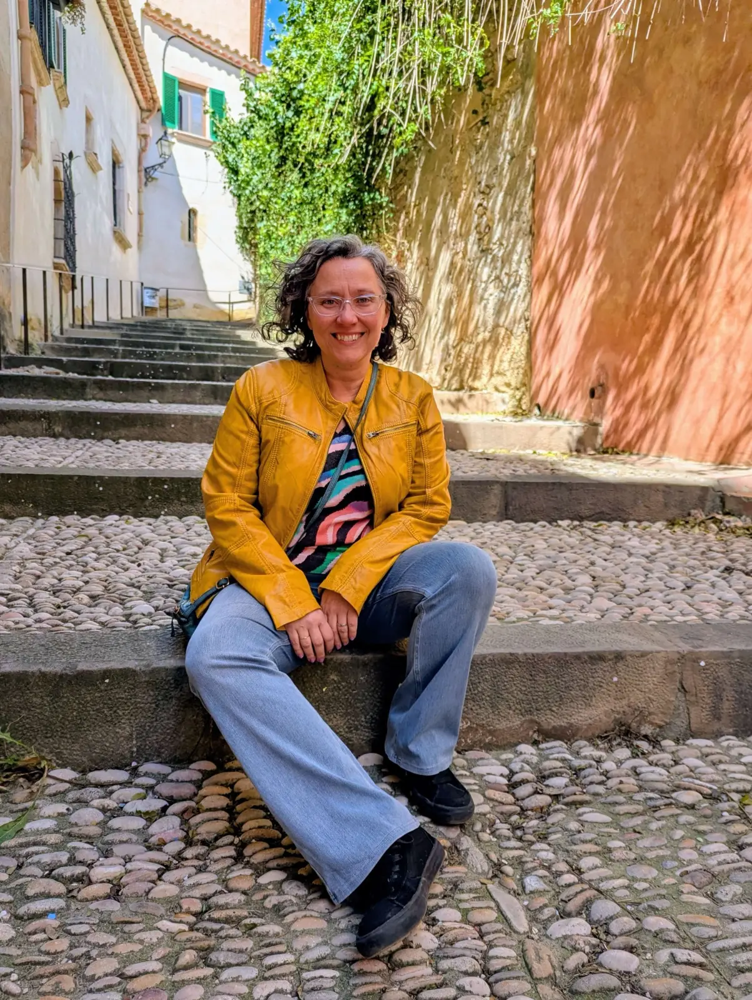

Sobre mí
Psicóloga colegiada en el Col·legi Oficial de Psicologia de Catalunya (COPC) n. 36181.

Durante mis primeros años de vida, estuve en contacto con una taberna familiar, un espacio sencillo pero lleno de vida donde las personas compartían historias, preocupaciones y sueños alrededor de un café o una copa de vino. Ese contacto con la escucha y el hecho de compartir ha influido profundamente en la manera en que entiendo hoy el acompañamiento psicológico.
Aún así, mi camino no comenzó aquí. A los 18 años me fui de casa para estudiar informática, siguiendo un recorrido que aparentemente se alejaba de esta parte más emocional. Esa etapa me llevó a vivir en Tarragona y más tarde en Madrid, donde nació mi primer hijo. Con el tiempo, y con el deseo de volver cerca de casa, nos establecimos en Altafulla, donde nació nuestra hija.
Sin embargo, había algo dentro de mí que seguía presente, como una voz suave pero persistente. El interés por la psicología, por comprender mejor a las personas y su mundo interno, nunca desapareció. Hasta que un día decidí escuchar esa voz y dar el paso.
Estudiar psicología ha sido un camino intenso, lleno de descubrimientos, no solo sobre los demás, sino también sobre mí misma. Me ha permitido poner palabras, herramientas y sentido a algo que ya estaba presente desde hacía tiempo: el deseo de acompañar.
Hoy acompaño a personas en sus procesos, desde el respeto, la escucha y el cuidado. Entiendo el bienestar no como un lugar al que llegar, sino como un camino que se va construyendo, paso a paso, a lo largo de la vida.
Creo profundamente en la importancia de contar con un espacio donde poder hablar con calma, sentirse escuchada y comprender mejor lo que estamos viviendo.
Mi manera de trabajar
Entiendo la terapia como un espacio donde poder detenerse, poner palabras a lo que está ocurriendo y empezar a comprender mejor el propio proceso.
Mi objetivo no es dar respuestas rápidas, sino acompañar a mirar con mayor claridad aquello que se está viviendo, respetando el ritmo de cada momento.
Trabajo desde una escucha atenta y respetuosa, creando un espacio de confianza donde poder expresarse con libertad, sin juicios.
A lo largo del proceso, vamos dando sentido a lo que aparece y encontrando nuevas formas de relacionarse con uno mismo, con las emociones y con los demás.